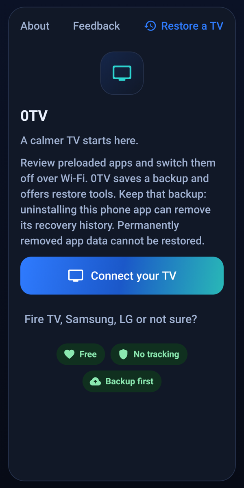

Disabling is the normal cleanup path. Separate removal tools carry greater recovery limits. Read the confirmation before applying any change.

PHONE UI RENDER / NOT A HARDWARE PHOTO
01.2 / HOME
A front row for your apps.
Choose 0TV Home inside the phone app for this redesigned launcher. Large app banners, a clear focus ring and remote-friendly navigation keep the next choice visible.
Real Mi Box 4 capture. Network name masked. Installed apps vary.01.3 / EVERYDAY TOOLS
The remote is in your hand.
A phone remote, text input, app launching, file sending and a check for apps that came back after an update. All in the same companion app.
0TV
⌃‹OK›⌄
↶⌂
CONTROL, WITHOUT THE CLUTTER CONCEPT ILLUSTRATION
Key support and file-transfer behavior depend on TV firmware. Full phone-to-TV workflows have not been proven on every device.
02 / INTENTIONALLY YOURSPHONE → WI-FI → TV
One companion. A different atmosphere.
PHONE
YOUR HOME NETWORK
ANDROID TV
Review first. No blind cleanup. See the choices before confirming.
Back up first. Keep recovery history. Restore has limits, not magic.
No account required. No analytics or automatic feedback upload in this build.
03 / THE FIELD GUIDEFROM FIRST DOWNLOAD TO A NEW HOME
Settle in. Step by step.
0TV is installed on your Android phone, not directly on the TV. The phone app handles the bundled launcher installation when you choose it.
STEP 01 / 06
↓
Download. Open. Install.
Download the APK on your Android 8.0+ phone. Open it from your browser or Files app. If Android asks, allow “Install unknown apps” for that app, then return to the installer. You can turn that permission off again afterward.
This is a sideloaded release candidate, not a Google Play listing. Install only if you trust the source. Keep the existing app installed when updating to preserve local history.
The optional J10TV section downloads the open-source JioTV Go app from the project's own GitHub releases and installs it as its own app on the TV. The download is checked against the SHA-256 GitHub publishes, and the app's package id and signing certificate are verified before anything is sent. You sign in with your own Jio account inside the app.
Only the latest stable release is offered, never a pre-release. 0TV checks processor, Android version and free space first, removes a copy only when 0TV itself installed it, and handles no account credentials. Tapping the TV picture in My TV now takes a fresh screenshot and updates that device's private cache; ordinary visits reuse the saved still. Physical-TV install and capture flows are covered by automated tests, not yet verified on a physical TV.
ADDED IN RC7YOUR SELECTED TV
Your TV. Its actual screen.
A TV frame holds an animated Android symbol until the first screenshot arrives over ADB. Then 0TV saves that still privately for the selected TV and reuses it, even after an app restart. No timestamp. No Refresh button. No capture on every visit.
A saved still, not a live view. Each device has its own private on-phone cache, excluded from backup and logs. Failed, invalid or all-black captures keep the Android placeholder. Protected video may be hidden. Physical-TV capture has not yet been verified in this release.
ADDED IN RC5APP2TV + A REMOTE SECRET
From your phone. To your TV.
App2TV copies an app already installed on your phone to the TV over your existing connection. Pick from all installed apps, check compatibility, then send the main APK and any split files. The TV installs it and 0TV explains the result in plain English.
Install on your phone first.
Many apps are missing from the TV app store. App2TV checks Android version, processor support and space before copying. Installing successfully does not guarantee remote-control support or that a phone app will run correctly.
Automated logic and screen tests pass. A physical phone-to-TV transfer has not yet been verified. See the testing notes for the exact scope.
A crack in the screen. Not really.
In the updated 0TV Home launcher, press Up, Up, Down, Down, Left, Right, Left, Right. Repeat the same sequence to remove the cracked-screen effect. It stays inside the launcher and needs no overlay permission.
Update the phone app, reconnect, then choose Home screen → 0TV Home → Use 0TV Home to install the new TV launcher. The effect was verified in rendered key-event tests, not on a physical remote.
04 / OPTIONAL TOOLSEXPLICIT CHOICES, SEPARATE FROM CLEANUP
⌁
DNS filtering. Only if you want it.
The optional Block ads tool sets Android Private DNS to AdGuard DNS on compatible Android 9+ TVs. Normal cleanup doesn't change DNS.
DNS queries then go to a third party. Filtering can affect connectivity and does not block YouTube in-video ads. Turn it off to restore the saved prior DNS setting.
↗
TizenTube Cobalt. A separate install.
An optional flow downloads from the project's GitHub releases and checks the download before sending it to the TV. This is not required for cleanup or 0TV Home.
Restore does not uninstall or roll back TizenTube/Cobalt. Compatibility depends on the TV. 0TV is not affiliated with YouTube or TizenTube.
05 / GOOD TO KNOWTHE DETAILS MATTER
Clear answers. No small print.
Powerful tools deserve plain language. Start with the limits as well as the possibilities.
Will it work with my TV?+
The companion phone needs Android 8.0 or newer. Android TV and Google TV are the primary targets. ADB debugging and network access must be available. Manufacturer firmware can change what works.
Fire TV has a limited cleanup/remote path; replacing Amazon's Home is not promised. Samsung Tizen and LG webOS are not supported Android TV targets. No blanket model-compatibility claim is made.
What does 0TV check?+
0TV reads the TV's real Private DNS setting and checks that names resolve before it reports ad blocking as on. TV screenshots here are from a Xiaomi Mi Box 4. Phone images are rendered app screens. Exact test scope is in docs/TESTING.md.
Can I undo every change?+
No. Restore uses recorded backups and prior state. Keep the phone app installed and keep recovery records. Uninstalling the phone app can remove its local history. Permanently deleted app data cannot be recovered by 0TV.
Restore does not roll back a TizenTube/Cobalt install. Record checks require Android user 0 and a matching Android-ID hash; resets, changed IDs, missing or corrupt records can prevent recovery. Launcher rollback is a safeguard, not a substitute for the TV maker's recovery instructions.
Why doesn't my TV appear?+
Put the phone and TV on the same home network, not an isolated guest network. Check Developer options and the debugging setting. Enter the TV's current network address manually if discovery misses it. Accept the approval prompt on the TV.
For Wireless debugging, use the fresh pairing code and pairing port shown by the TV, then its connection port. Menus vary. Never expose ADB to the public internet or disable its approval checks.
Which Home should I pick?+
Choose “0TV Home” for the redesigned screen shown here. “Simple” and the original Dock-style choice are different launchers. The phone app installs the chosen bundled launcher; there is no separate launcher APK for you to manage.
Clock/header elements can be hidden when the TV reports an invalid date. The app grid can show multiple installed launchers with the same upstream “Home” label.
What leaves my network?+
The main connection is local ADB between your phone and TV. This build has no analytics, crash reporter, automatic update check or feedback upload. Feedback opens Android's share sheet, so you choose whether and where to send it.
The optional Cobalt flow contacts GitHub. Optional DNS filtering sends the TV's DNS queries to AdGuard. This website uses no analytics, cookies or third-party scripts; GitHub still serves the site and downloads.
How do I build it or report a problem?+
The public repository contains the Android companion, the 0TV Home fork, tests, pinned-input instructions, licences and build notes. Developer builds use a different signing key unless you supply your own. They cannot update the published app in place without its original signing identity.
Read Building from source or open an issue. Share your model, Android version, what you expected and what happened. Inspect and redact logs before posting them publicly.